Visual Identity proposal for BKIS
BKIS is the main event organizing center in Bratislava, the capital city of Slovakia. The role of BKIS is to
bring life to the city, providing programs, services, and products in the fields of culture, tourism,
sports, and social life.
Therefore, I choose the river Danube as the main element of a new Visual Identity. The river is depicted
with three parallel lines with the curve of the section flowing through the city. These lines create a
distinct pattern that is present across all printed materials along with the acronym-based geometric logo.
Logotype,
Visual Identity,
Design System
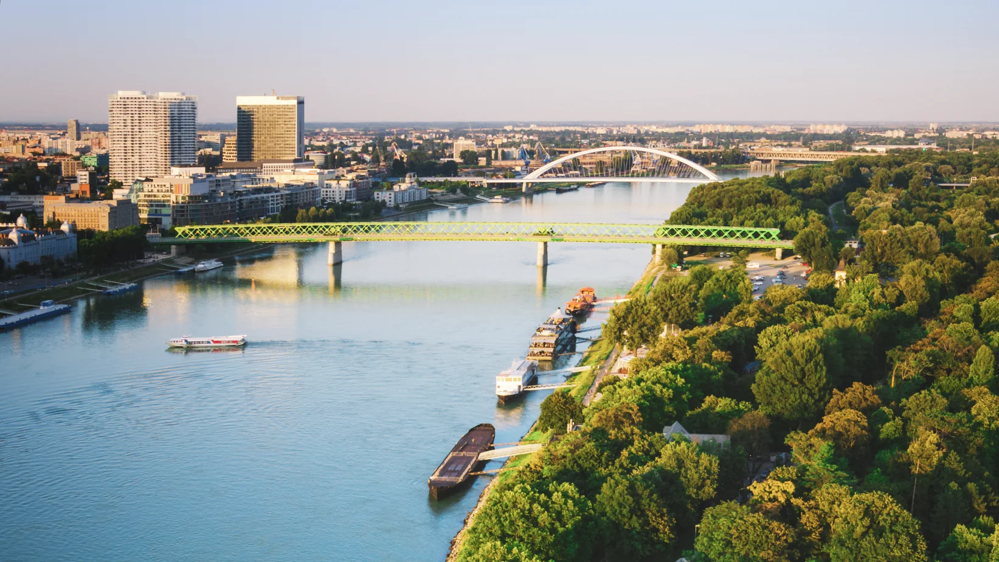
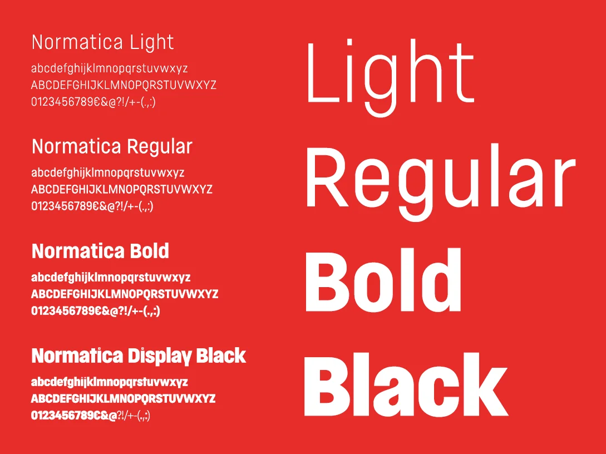
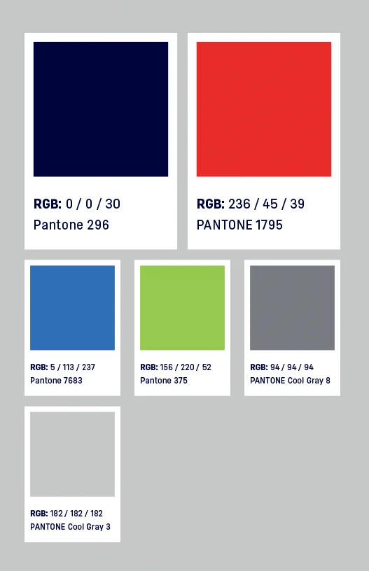
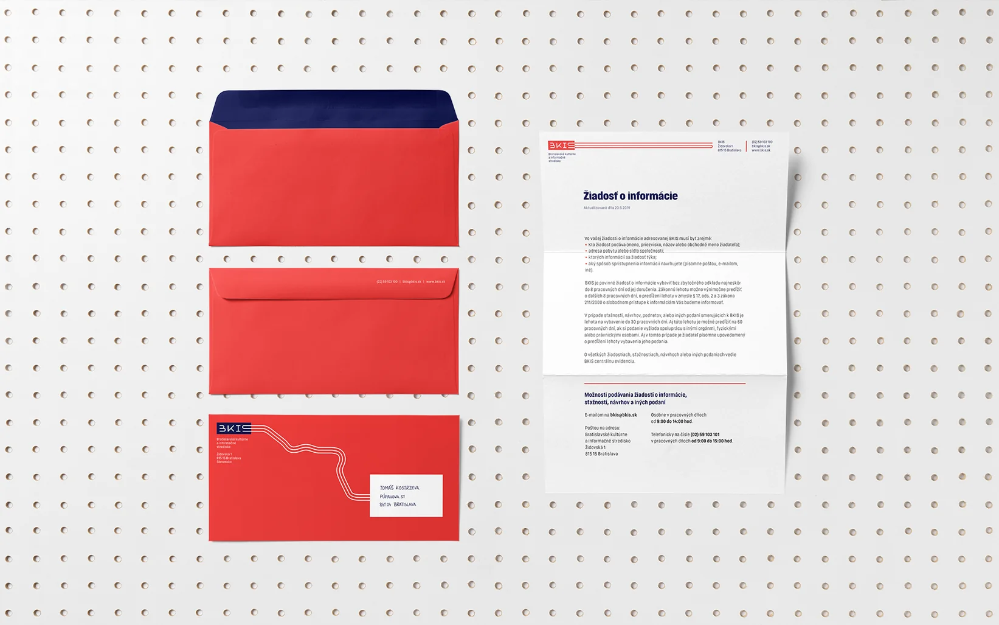
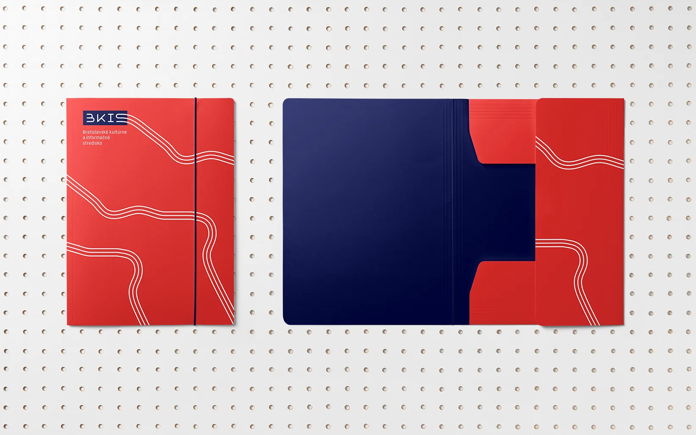
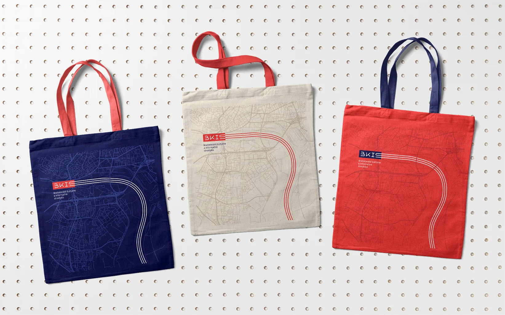
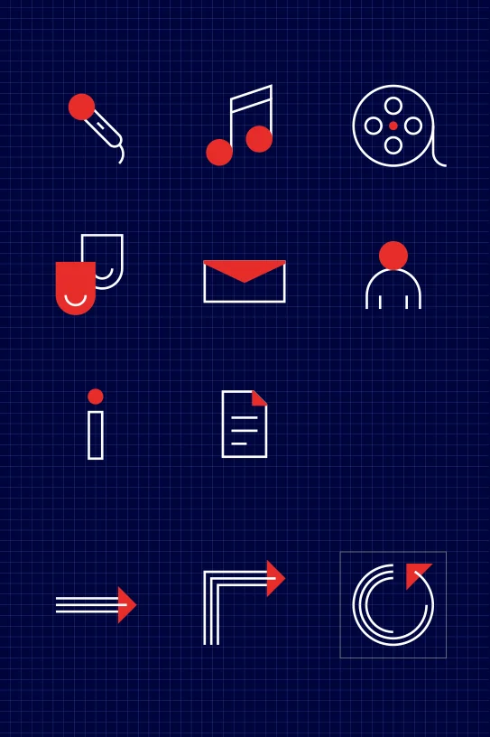
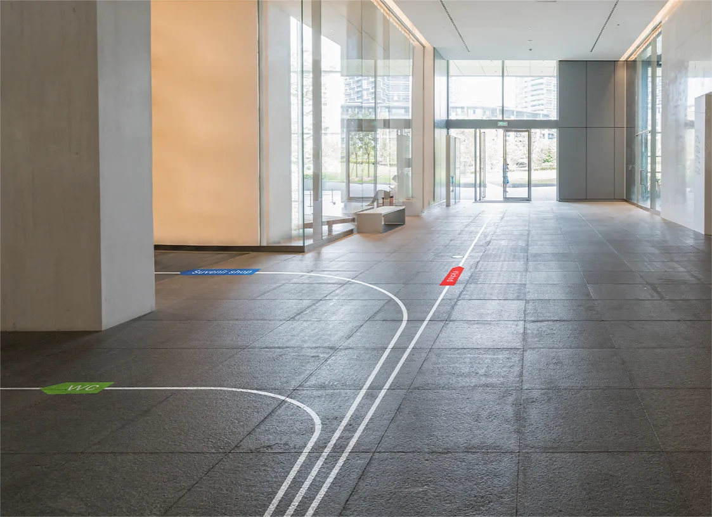
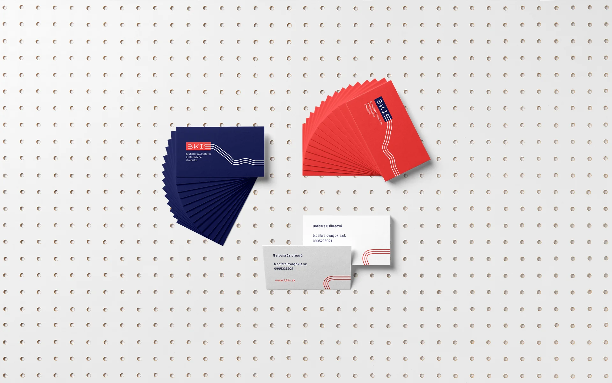
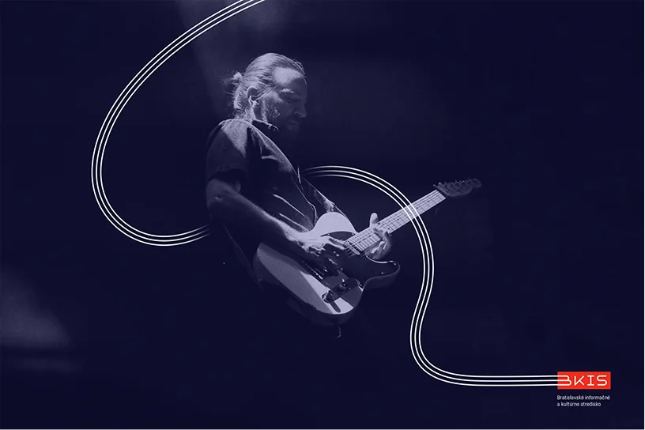
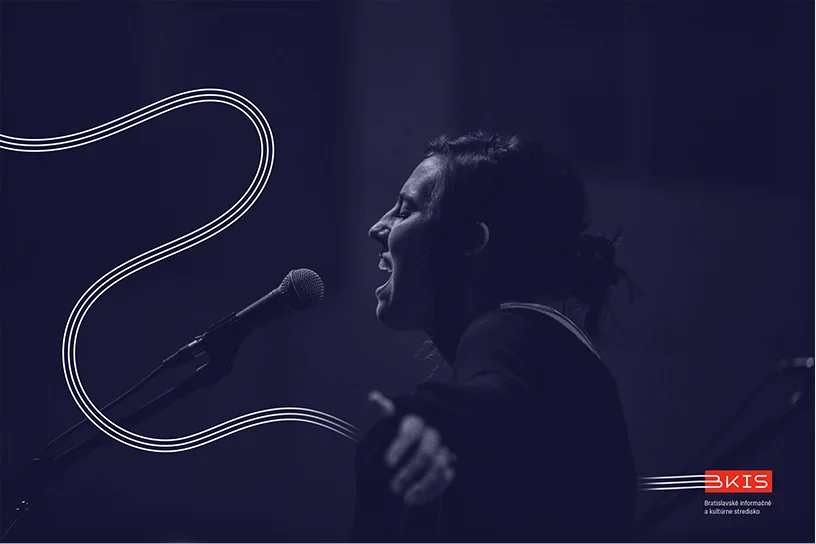
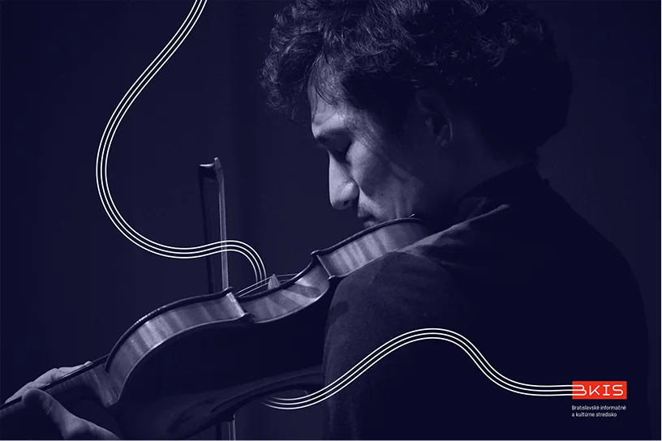
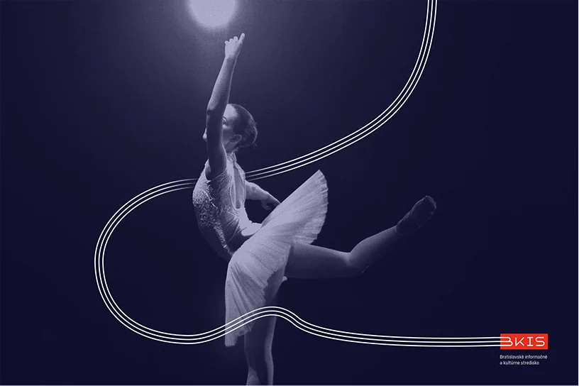
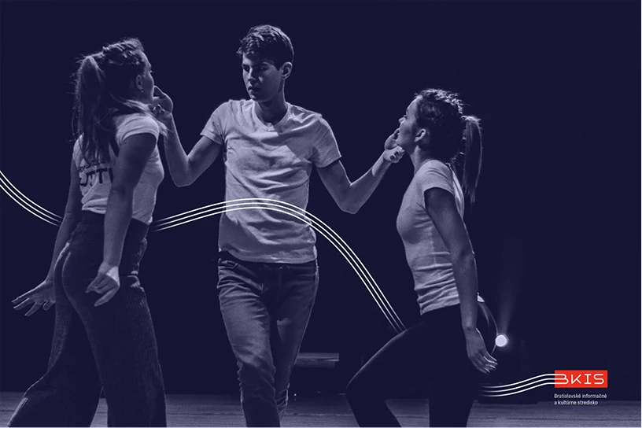
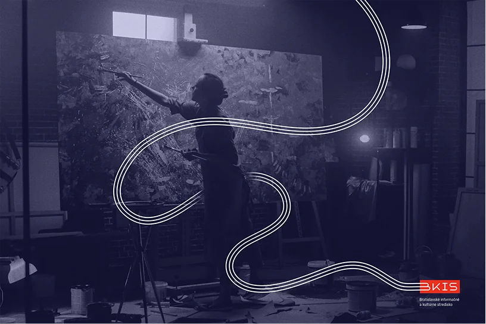
The typeface used in this project is made by CarnokyType.